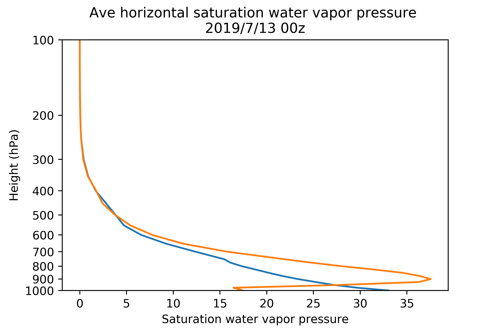
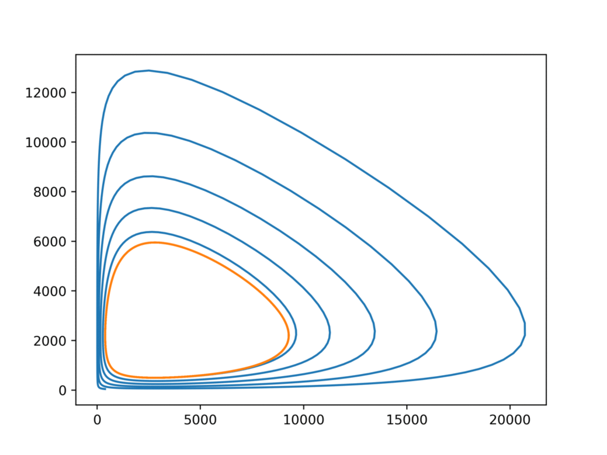

Chieh-Hsiang, Fan
范傑翔
興趣與專長
攝影
騎車
環境保育
社會現象觀察
專業
大氣科學
資料與數據分析(大氣科學)
地科科普與環境推廣
基本coding: c++/python/GrADS/matlab/html/FORTRAN......
攝影：風景-美國自然風景 羚羊谷、大峽谷、馬蹄灣
羚羊谷：在接近中午的日照下，陽光穿過雲隙、透進峽谷，穿越砂岩映照在岩壁中，高約六米的峽谷中，有著從砂岩崩落下來的細沙，像瀑布般流洩而下，掌握光影在風景中綻放的霎那，用底片捕捉，便是攝影最重要的關鍵。
馬蹄灣：在漫長的時間軸中，科羅拉多河年復一年的切割，造就出蜿蜒曲折的河谷，聳高的岩壁刻畫著地質的歷史，深綠色的河水映照著河岸，在強風中靜靜的欣賞這大自然所創造的奇景，只能讚嘆大自然的鬼斧神工。
大峽谷：河流與支流在堅硬的砂岩上刻畫下屬於他們的時光軌跡，堅硬的岩層中用著構造訴說著過往的歷史，倒轉與褶皺，在河流的切割下一覽無遺，岩層是一個紀錄者，而河流，是讓我們能夠看見歷史的催化劑。
千變萬化的天氣讓我們一行人在五月的美國遇到大雪，而這次我們所遇見的大峽谷，是積著雪的大峽谷，橘黃的岩層綴著點點白雪，甚是奇景。
攝影：街拍-基隆崁仔頂批發漁市
攝於基隆崁仔頂漁市，因為我對於漁業與環境的保護有興趣，加上興趣是攝影，家人也有釣魚的習慣，因此會偶爾前往基隆崁仔頂漁市看漁獲。
該漁市供應了北部地區主要的市場海鮮，通常在清晨1點開業，營業至約4至5點，星期日接星期一的清晨休市。
在清晨的基隆，可以體驗到如同西門町般的擁擠人潮，但不同的是，在這來回徘徊的多是一早要在市場擺攤的人們，或是在餐廳料理海鮮的大廚。
跨出漁市，迎面而來的是不分四季，沁涼的海風與港味，冷清而又帶有一股獨特的重油味
大氣-氣象分析：2020年5月22日南部大雨事件
右圖為雷達回波圖，在右圖中可以發現台灣西南方的雲帶移入的現象以及對流雲系與降雨區的發展。
而在前期至中期，可以發現一整條強降雨帶，與風向成平行移入高雄屏東地區，但是中篇後期，有一強降雨區在西南方出現，並且產生一對流雲系(胞線)，其方向與前期平行於風向不同，主要為垂直於大區域風場。
該胞線的出現推測主要因為其後方的雲系，因為降水，並帶下來的冰冷下沉氣流，讓外圍環境的熱空氣受到舉生，形成類似於鋒面的雲系，是為胞線，而胞線的出現多伴隨強降水，強陣風，常造成地區性的災害。


大氣資料繪製與分析：飽和水氣壓
使用模式資料，將水平網格點之數據平均後對其做運算，經過C-C equation 計算後，算出在垂直方向上的飽和水氣壓便畫質，其值可以直接反映溫度在高度上的變化。
攝影：風景-美國自然風景 羚羊谷、大峽谷、馬蹄灣
羚羊谷：在接近中午的日照下，陽光穿過雲隙、透進峽谷，穿越砂岩映照在岩壁中，高約六米的峽谷中，有著從砂岩崩落下來的細沙，像瀑布般流洩而下，掌握光影在風景中綻放的霎那，用底片捕捉，便是攝影最重要的關鍵。
馬蹄灣：在漫長的時間軸中，科羅拉多河年復一年的切割，造就出蜿蜒曲折的河谷，聳高的岩壁刻畫著地質的歷史，深綠色的河水映照著河岸，在強風中靜靜的欣賞這大自然所創造的奇景，只能讚嘆大自然的鬼斧神工。
大峽谷：河流與支流在堅硬的砂岩上刻畫下屬於他們的時光軌跡，堅硬的岩層中用著構造訴說著過往的歷史，倒轉與褶皺，在河流的切割下一覽無遺，岩層是一個紀錄者，而河流，是讓我們能夠看見歷史的催化劑。
千變萬化的天氣讓我們一行人在五月的美國遇到大雪，而這次我們所遇見的大峽谷，是積著雪的大峽谷，橘黃的岩層綴著點點白雪，甚是奇景。


攝影：街拍-基隆崁仔頂批發漁市
攝於基隆崁仔頂漁市，因為我對於漁業與環境的保護有興趣，加上興趣是攝影，家人也有釣魚的習慣，因此會偶爾前往基隆崁仔頂漁市看漁獲。
該漁市供應了北部地區主要的市場海鮮，通常在清晨1點開業，營業至約4至5點，星期日接星期一的清晨休市。
在清晨的基隆，可以體驗到如同西門町般的擁擠人潮，但不同的是，在這來回徘徊的多是一早要在市場擺攤的人們，或是在餐廳料理海鮮的大廚。
跨出漁市，迎面而來的是不分四季，沁涼的海風與港味，冷清而又帶有一股獨特的重油味
大氣-氣象分析：2020年5月22日南部大雨事件
右圖為雷達回波圖，在右圖中可以發現台灣西南方的雲帶移入的現象以及對流雲系與降雨區的發展。
而在前期至中期，可以發現一整條強降雨帶，與風向成平行移入高雄屏東地區，但是中篇後期，有一強降雨區在西南方出現，並且產生一對流雲系(胞線)，其方向與前期平行於風向不同，主要為垂直於大區域風場。
該胞線的出線推測主要因為其後方的雲系，因為降水，並帶下來的冰冷下沉氣流，讓外圍環境的熱空氣受到舉生，形成類似於鋒面的雲系，是為胞線，而胞線的出現多伴隨強降水，強陣風，常造成地區性的災害。

數據分析：
不同數值分析方法與數值解微分方程方法效率探討
在非線性系統下，因為初始值微小的改變，讓最後結果有很大差異的探討。
而比較方法是採用兩種不同的數值解微分方程方法(Eular and RK4)
可以發現在調整Eular方法的精確度後，可以讓其精確度接近於使用RK4方法，但是所耗費的運算資源相較於RK4為多。
(RK4在最低模擬精確度時即可達到接近有模擬到之最精模擬的Eular方法的精確度)
大氣-科展著作：秋颱共伴效應
主要探討秋季颱風與東北季風造成共伴效應的變化與災害探討。
於國內參賽的海報主要討論海平面輻合輻散，路徑轉折與共伴雲系產生關連性。
討論近地表風場小尺度的輻合與輻散，進而造成局部地區強降水，如梅姬颱風在蘇澳地區的牆降水，導致蘇花公路阻斷並使遊覽車翻覆並失蹤。
於國外參賽的海報則有討論水氣與輻合輻散關聯與雲系強度變化比較以及較為詳述地形關聯性。

20181124大選與公投觀察日誌
我不應該談政治 但還是談了 20181124大選與公投觀察日記-世代之爭?
希望有人看完 雖然又臭又長
看一篇靠北的文之前先來點笑話
如果我們把臺北市改成民國市，我們就能以中華民國參賽了(?)
以下序文：
認識我的應該知道我本身支持哪個黨派，但我先說這次姚文智真的搞事，也證實了DPP在台北市信仰的強烈，而新北在318學運狂潮下KMT也未失守，這次輸也是不意外，高雄的話，我見識到了佔領媒體版面的功效，也看到了台灣一股跟風的氣息，我雖然不是高雄人，但連高雄一到十都背不出來的人居然都選上了高雄市長，可能是高雄渴望改變吧，但我覺得更多的是跟風與操作，這點需要高雄人出來釋疑嘍，希望韓總能讓高雄更進步，但我同時也希望高雄別被紅化。 我知道了沒人認真在看辯論，看了也很難改變人的立場，畢竟人是自負的，一場正常的辯論結果到底能影響多少選情，能影響多少人心。
所以有人要揪團衝去報名地質系嗎，地質系要起飛了，往南海挖石油去，呵。
本文：......

校園大使
中規中矩

校園大使
裙襬 飄揚
得獎喜悅
ISEF 材料科學
得獎喜悅
ISEF 細胞分子生物學

旅遊合照
學生與科展輔導行政人員


太平山&舊林業鐵路

乘坐在小火車上，聽著在山林中唯一一群人的嘈雜聲，望向柵欄外，一望無際的茂林


舊鐵道的遺跡，蜿蜒在山中

斷橋的木樁已腐朽，軌道雖繡蝕，但依然成為一座孱弱與對岸連結的便橋


鐵道中的鋼釘，定住了枕木與鋼軌，多年未修，早已從軌道離開，失去了原有的固定功能

日出
拉拉山與櫻花

春季踏青，騎車上山，向山寧靜的角落走去，駐足後，拿起相機
將這翠綠山頭中的一點紅凍結在這快門中，讓霎那成為永恆


在薄霧中的步道，不見盡頭

跨越小溪的步道，躺在其下的橫木，訴說著自然中風雨的無情

總統府光雕秀